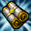
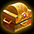
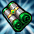

21周年前夜祭
■開催期間
開催：2026年1月22日（木）メンテナンス後～2月19日（木）メンテナンス前。
狩りで集める21st Eve Boxは毎週種類が替わります。
ゲーム内ログインとWebアドベントカレンダーは、それぞれ受取操作を行います。
■週替わり21st Eve Box
Lv301～1999は自分のLv－100以上、Lv2000～2200はLv－50以上のモンスターが対象。
週100個まで、毎週月曜0時にリセット。
箱は取引・銀行取引不可です。
| アイテム名 | 獲得期限及び有効期間 |
|---|---|
| 2026年1月22日 (木) メンテナンス後～ 2026年1月29日 (木) メンテナンス前まで | |
| 2026年1月29日(木) メンテナンス後～ 2026年2月5日(木) メンテナンス前まで | |
| 2026年2月5日(木) メンテナンス後～ 2026年2月12日(木) メンテナンス前まで | |
| 2026年2月12日(木) メンテナンス後～ 2026年2月19日(木) メンテナンス前まで |
インベントリに空きがないとフィールドへ落ち、「ロトボックス」と表示されます。
拾ってから実際のBOX名を確認します。
各BOXは表の期間内に開けます。
Ⅰ：★3
| アイテム名 | 個数 | アイテム詳細 |
|---|---|---|
| 1 | アイテムをランダムで獲得するBox。 中身一覧（公式） |
Ⅰ：★2
| アイテム名 | 個数 | アイテム詳細 |
|---|---|---|
| 1 | コスチューム強化・合成の素材。 銀行取引不可。 | |
| 1 | ネフォンクリーチャーを1体召喚。 銀行取引不可。 |
Ⅰ：★1
| アイテム名 | 個数 | アイテム詳細 |
|---|---|---|
| 1 | 錬成素材。 クリーチャー経験値の育成素材としても使用可能。 | |
| 1 | 2分間CPを最大値に維持。 同効果の重複使用不可。 | |
| 1 | 錬成素材などへ使用する赤い光。 | |
| 1 | 効果・使用条件 | |
| 1 | 効果・使用条件 | |
| 1 | 効果・使用条件 | |
| 1 | 指定した場所へ移動。 銀行取引不可。 | |
| 1 | 効果・使用条件 | |
| 1 | 効果・使用条件 |
Ⅱ：★3
| アイテム名 | 個数 | アイテム詳細 |
|---|---|---|
| 1 | アイテムをランダムで獲得するBox。 中身一覧（公式） |
Ⅱ：★2
| アイテム名 | 個数 | アイテム詳細 |
|---|---|---|
| 1 | 製錬失敗時の保護用。 1～10段階はLv低下なし、11～20段階はアイテム消滅なし。 銀行取引不可。 | |
| 1 | ネフォンクリーチャーを1体召喚。 銀行取引不可。 |
Ⅱ：★1
| アイテム名 | 個数 | アイテム詳細 |
|---|---|---|
| レア等級白紙図案書 | 1 | 魔力インクで記された図案書を得る。 レア等級の図案書からランダムで1種獲得。 |
| 1 | 錬成素材。 クリーチャー経験値の育成素材としても使用可能。 | |
| 1 | 錬成素材などへ使用する赤い光。 | |
| 1 | 効果・使用条件 | |
| 1 | 効果・使用条件 | |
| 1 | 指定した場所へ移動。 銀行取引不可。 | |
| 1 | 効果・使用条件 | |
| 1 | 効果・使用条件 |
Ⅲ：★3
Ⅲ：★1
| アイテム名 | 個数 | アイテム詳細 |
|---|---|---|
| 1 | クリーチャー経験値の育成素材。 | |
| 1 | クリーチャーのマナ100個分。 | |
| 1 | クリーチャー経験値の育成素材。 | |
| 1 | クリーチャーのマナ30個分。 | |
| 1 | クリーチャー経験値の育成素材。 銀行取引不可。 | |
| 1 | クリーチャー経験値の育成素材。 銀行取引不可。 | |
| 1 | 効果・使用条件 | |
| 1 | 指定した場所へ移動。 銀行取引不可。 | |
| 1 | 効果・使用条件 | |
| 1 | 効果・使用条件 |
Ⅳ：★3
Ⅳ：★2
| アイテム名 | 個数 | アイテム詳細 |
|---|---|---|
| 1 | コスチューム強化・合成の素材。 銀行取引不可。 | |
| 2 | ネフォンクリーチャーを1体召喚。 銀行取引不可。 |
Ⅳ：★1
| アイテム名 | 個数 | アイテム詳細 |
|---|---|---|
| 1 | 錬成素材。 クリーチャー経験値の育成素材としても使用可能。 | |
| 1 | 2分間CPを最大値に維持。 同効果の重複使用不可。 | |
| 1 | 錬成素材などへ使用する赤い光。 | |
| 1 | 効果・使用条件 | |
| 1 | 効果・使用条件 | |
| 1 | 効果・使用条件 | |
| 1 | 指定した場所へ移動。 銀行取引不可。 | |
| 1 | 効果・使用条件 | |
| 1 | 効果・使用条件 |
■全21日のログイン報酬
各日の報酬を受け取って次の日へ進めます。
受取先は、道具を使うキャラクターと銀行取引の可否を確認して選びましょう。
| 日数 | アイテム名 | 個数 | アイテム詳細 |
|---|---|---|---|
| 1日 | 1 | Lv2000未満のモンスター討伐経験値を70分間110%増加。 | |
| 2日 | 1 | ミニペットを1体召喚。 契約期間30日。 銀行取引不可。 | |
| 3日 | 1 | レイド経験値をLv1～849は2倍、850～1999は6倍にする。 Lv2000以上は経験値を得ず消費。 銀行取引不可。 ※取引不可 | |
| 4日 | 1 | クリーチャー経験値の育成素材。 銀行取引不可。 | |
| 5日 | 50 | 魔力溶解などで得られるインク。 図案書の作成などに使用。 | |
| 6日 | 1 | フェーズストーンの錬成素材。 ※取引不可 | |
| 7日 | 2 | 装備を製錬し、出現する称号の数を増やす。 銀行取引不可。 | |
| 8日 | 1 | 復活時の死亡ペナルティーを90%短縮し、30秒間最大HPを200%にする。 | |
| 9日 | 1 | Lv2000未満のモンスター討伐経験値を60分間150%増加。 他の果実と併用可能。 銀行取引不可。 | |
| 10日 | 3 | HPを100%即時回復。 連続使用不可。 | |
| 11日 | 3 | 10分間CPを最大値に維持。 同効果の重複使用不可。 | |
| 12日 | 1 | クリーチャーのマナ100個分。 | |
| 13日 | 1 | レイド経験値をLv1～849は2倍、850～1999は6倍にする。 Lv2000以上は経験値を得ず消費。 銀行取引不可。 ※取引不可 | |
| 14日 | 1 | 古竜の魔石を1個生成。 高ランクを保証する品ではない。 銀行取引不可。 | |
| 15日 | 2 | ランダムなオプションのお守りを獲得。 お守りの付与には成功・失敗がある。 中身一覧（公式） | |
| 16日 | 1 | Lv2000未満のモンスター討伐経験値を60分間150%増加。 他の果実と併用可能。 銀行取引不可。 | |
| 17日 | 50 | ディメンション・ハブで得られる装備強化素材。 ※取引不可 | |
| 18日 | 1 | 装備の能力を強化する石。 | |
| 19日 | 1 | フェーズストーンの錬成素材。 ※取引不可 | |
| 20日 | 1 | 古竜の魔石を1個生成。 高ランクを保証する品ではない。 銀行取引不可。 | |
| 21日 | 1 | HR等級のクリーチャーを1体召喚。 銀行取引不可。 |
■アドベントカレンダー
公式サイトへログインし、特設ページで数字の順に1日1回クリックします。
報酬は買い物カゴへ届きます。
全21日分を開けると隠された特典が公開されます。
| カレンダー報酬 | アイテム名 | アイテム詳細 |
|---|---|---|
| 「1日目」 | HPを100%即時回復。 連続使用不可。 | |
| 「2日目」 | 指定した場所へ移動。 銀行取引不可。 | |
| 「3日目」 |  無限のステータス再配分巻物 [1日間] x1 | 効果・使用条件 |
| 「4日目」 | ミニペットを1体召喚。 契約期間30日。 銀行取引不可。 | |
| 「5日目」 |  ペブルコクーンパッケージ [10個] x1 | 効果・使用条件 |
| 「6日目」 | Lv2000未満のモンスター討伐経験値を60分間150%増加。 他の果実と併用可能。 銀行取引不可。 | |
| 「7日目」 | ディメンション・ハブで得られる装備強化素材。 ※取引不可 | |
| 「8日目」 | クリーチャー経験値の育成素材。 | |
| 「9日目」 | 10分間CPを最大値に維持。 同効果の重複使用不可。 | |
| 「10日目」 | 異界強化に使用する強化石。 | |
| 「11日目」 | コスチューム強化・合成の素材。 銀行取引不可。 | |
| 「12日目」 |  無限のスキル再配分巻物 [1日間] x1 | 効果・使用条件 |
| 「13日目」 | 「終焉の森」関連の交換用コイン。 ※取引不可 | |
| 「14日目」 | クリーチャー経験値の育成素材。 | |
| 「15日目」 | クリーチャーのマナ100個分。 | |
| 「16日目」 | 2分間CPを最大値に維持。 同効果の重複使用不可。 | |
| 「17日目」 | 解放済みのNxオプションをランダムに変換。 追加リング・補助武器・投擲爪・壊れた装備には使用不可。 銀行取引不可。 | |
| 「18日目」 | フェーズストーンの錬成素材。 ※取引不可 | |
| 「19日目」 | ネフォンクリーチャーをランダムで召喚。 銀行取引不可。 | |
| 「20日目」 | 比率OPの魔法のお守りを選択して獲得。 銀行取引不可。 | |
| 「21日目」 | 壊れた装備を完全修理。 スーパーユニークの称号はすべて1回にする。 銀行取引不可。 |
■おすすめの進め方
BOXの有効期間と月曜の上限更新を確認
箱の種類が替わる日時と、週100個の上限が戻る月曜0時は別です。
月曜以降の獲得分も次の切替までは同じBOXなので、欲しい週の中身を確認して狩りと重ねられます。
取得したキャラクターで、有効期間内に開けます。
2種類のログインを完走
ゲーム内は21日目の【HR】確定コクーン[E]、Webは19日目のソーラーコクーン[E]、20日目の願いの箱、21日目の天上の鉄床[E]まで受け取ります。
ゲーム内の報酬を受け取った後に、Webカレンダーも1回開く流れへまとめると進めやすいです。
追加の素材消費を伴う周回を箱だけのために増やさず、Lv差を満たす普段の狩りと週100個の回収を重ねます。